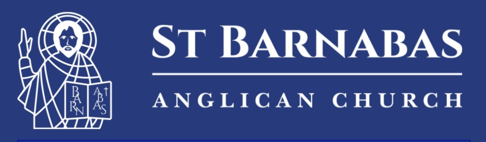
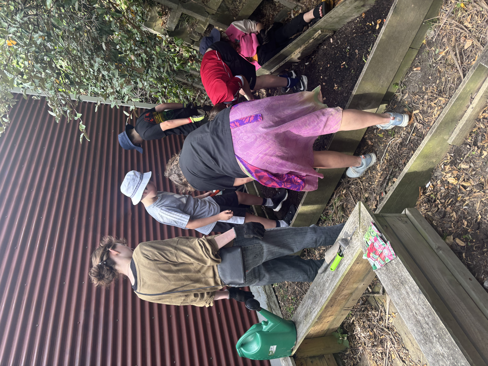
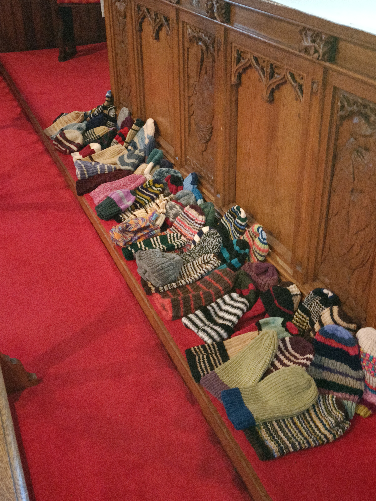

Saint Barnabas Parish Update
A few cheerful updates from around Saint Barnabas
Around the Grounds

There’s been plenty happening on the property front. The vicarage painting work is now complete, which has freshened things up nicely. You may also have noticed that the fence by the school has been repaired — with thanks to the Ministry of Education for that work.
We’re also keeping an eye on a few maintenance items around the church grounds so that things stay safe, sound, and welcoming for everyone.
Growing Good Things

A lovely development has been the gardening work with Roseneath School. It’s been exciting to see young people getting involved, growing things, and connecting with the church in practical ways. It’s a wonderful sign of community life in action.
Warm Hands, Warm Hearts

A big thank you to everyone involved in the recent effort to support the Seafarers Mission. Seventy beanies were knitted and presented — a fantastic contribution.
We also hear that fingerless gloves would be especially useful, for anyone looking for their next knitting project.
Looking Ahead

There are a few community events coming up in the life of the parish, including shared meals and opportunities to gather, talk, and stay connected. More details will be shared soon, so keep an eye out.
In the Community

Saint Barnabas continues to take an active interest in the wider community, including support for initiatives that help people and families thrive. It’s encouraging to see parishioners connecting faith, action, and everyday life in practical ways.
A Parish Full of Life

It’s been heartening to see the many different ways people are contributing — through care for the buildings, support for local schools, knitting, technology, hospitality, and community engagement. Saint Barnabas is full of quiet good work, and it’s worth celebrating.